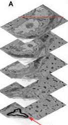
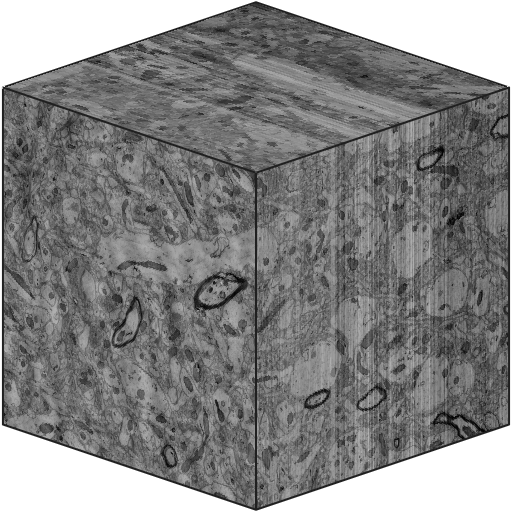
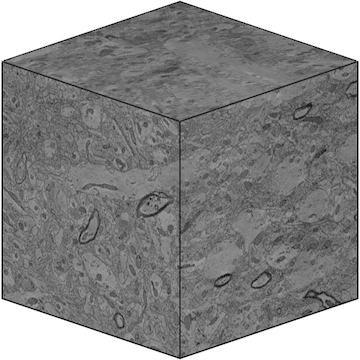
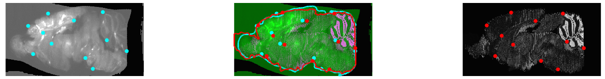
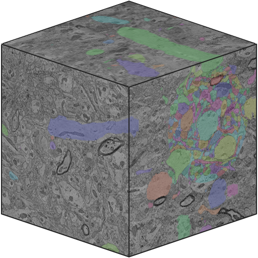
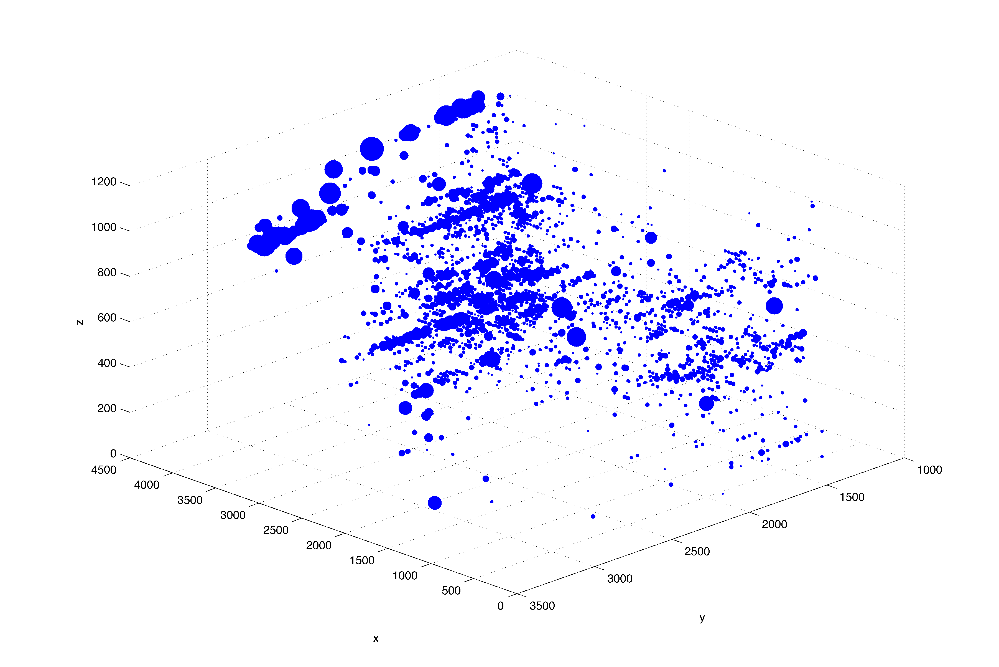
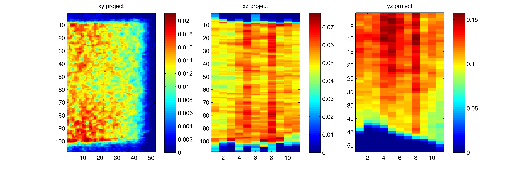
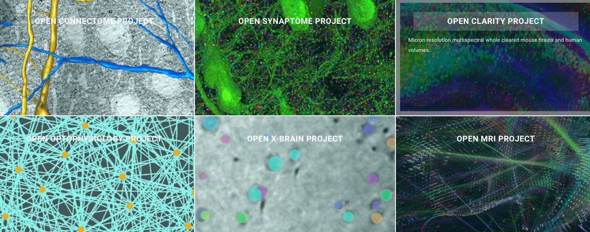
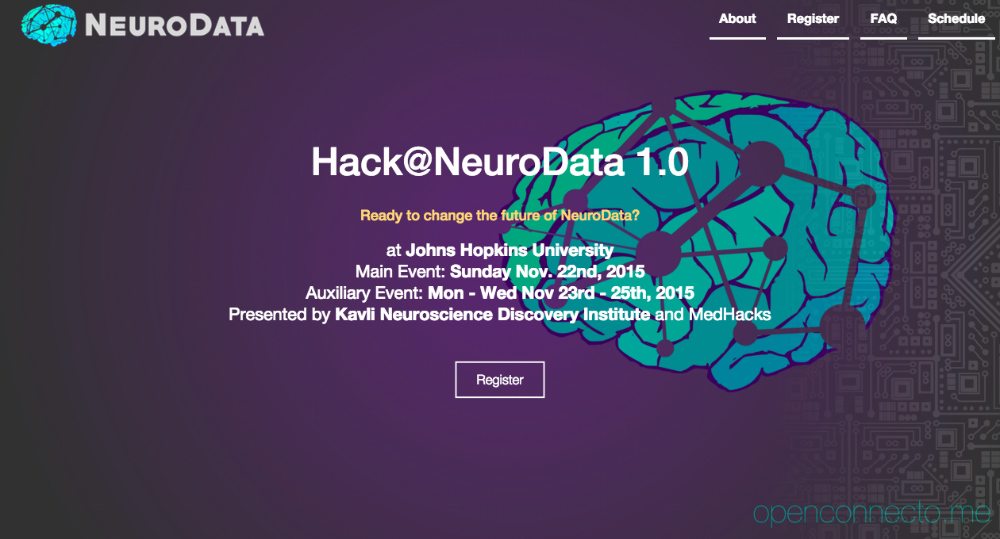

class: center, middle, inverse # NeuroData: # Enabling Petascale Neuroscience ### Joshua T. Vogelstein ### {[BME](http://bme.jhu.edu),[ICM](http://icm.jhu.edu),[CIS](http://cis.jhu.edu),[Kavli](http://kndi.jhu.edu)}@[jhu.edu](http://jhu.edu) #### e: [jovo@jhu.edu](mailto:jovo@jhu.edu) | w: [neurodata.io](http://neurodata.io) #### this talk: <https://github.com/jovo/2015-BME-Talk> --- ### Please consider the following _Gedankenexperiment_ #### Experiment 1: collect 10 images in a stack (~ 10 MB) → find all ~100 synapses 1. Look: Open in ImageJ on local computer 2. Pre-process: Manually align images & adjust contrast 3. Annotate: Manually label each synapse 4. Analyze: Plot them all in a 3D scatter plot  --- ### Please consider another _Gedankenexperiment_ #### Experiment 2: collect 10K images in a stack (~10 TB) → find all 10M synapses 1. Look: Data too large to load into ImageJ on local computer 2. Pre-process: Takes too long to manually pre-process 3. Annotate: Takes even longer find all synapses 4. Analyze: Can't really see what is going on when plotting 10M synapses  --- ### Opportunity: Datasets like this are popping up all over the place <!-- # Case Study --> <!-- <object id="flashObj" width="720" height="405" classid="clsid:D27CDB6E-AE6D-11cf-96B8-444553540000" codebase="http://download.macromedia.com/pub/shockwave/cabs/flash/swflash.cab#version=9,0,47,0"><param name="movie" value="http://c.brightcove.com/services/viewer/federated_f9?isVid=1&isUI=1" /><param name="bgcolor" value="#FFFFFF" /><param name="flashVars" value="videoId=4387457748001&playerID=4298174096001&playerKey=AQ~~,AAAAAFNl7zk~,OmXvgxJOvrFlNNcISwb5HS0SrUe6qS3Q&domain=embed&dynamicStreaming=true" /><param name="base" value="http://admin.brightcove.com" /><param name="seamlesstabbing" value="false" /><param name="allowFullScreen" value="true" /><param name="swLiveConnect" value="true" /><param name="allowScriptAccess" value="always" /><embed src="http://c.brightcove.com/services/viewer/federated_f9?isVid=1&isUI=1" bgcolor="#FFFFFF" flashVars="videoId=4387457748001&playerID=4298174096001&playerKey=AQ~~,AAAAAFNl7zk~,OmXvgxJOvrFlNNcISwb5HS0SrUe6qS3Q&domain=embed&dynamicStreaming=true" base="http://admin.brightcove.com" name="flashObj" width="480" height="270" seamlesstabbing="false" type="application/x-shockwave-flash" allowFullScreen="true" allowScriptAccess="always" swLiveConnect="true" pluginspage="http://www.macromedia.com/shockwave/download/index.cgi?P1_Prod_Version=ShockwaveFlash"></embed></object> --> <iframe width="420" height="315" src="https://www.youtube.com/embed/1aVNRZtxeIU" frameborder="0" allowfullscreen></iframe> - Real Experiment: Serial Electron Microscopy - Resolution: 4 x 4 x 40 nm^3 - Volume: 350 x 450 x 50 micron^3 - Size: ~10 TB Note: the above video is from Kasthuri et al. (Cell, 2015), but the data we are discussing are from Bock et al. (Nature, 2011) --- ### Challenge: Can't perform any of the 4 steps to discovery <img src="https://www.lucidchart.com/publicSegments/view/1ff858db-fb4b-49c7-92c6-087c89644a4d/image.png" alt="Drawing" style="width: 800px;"/> --- ### Challenge: Can't perform any of the 4 steps to discovery <img src="https://www.lucidchart.com/publicSegments/view/fd4b2f0c-01f1-4819-9403-32e304ab5569/image.png" alt="Drawing" style="width: 800px;"/> ### Action: Meet needs to achieve each step - Hardware - Software Infrastructure - Algorithms --- # Resolution: NeuroData! ### We make the following open science contributions to the community: - reference datasets in a variety of modalities - reference pipelines for operating on such data - Web-services to enable using our data-intensive computing - A cloud computing stack to facilitate analysis - Detailed specs for plugging in different routines - Data derivatives at all stages of analysis -- ### It is now easier to: - Bridge across scales and modalities - Answer questions the require scale - Engage complementary expertise - Reproduce results --- # What this talk is about <br></br> - A case study - Explain each need to achieve goal - For each step: - Explain failure old way to meet those needs - Explain success of new way to meet those needs --- # Case Study <iframe width="420" height="315" src="https://www.youtube.com/embed/1aVNRZtxeIU" frameborder="0" allowfullscreen></iframe> - Experiment: Serial EM - Resolution: 4 x 4 x 40 nm^3 - Volume: 8M micron^3 - Size: ~10 TB - Question: Are synapses distributed uniformly in space? --- # The numbers - ~8 million cubic microns -- - => ~8 million synapses -- - Manual labeling requires ~10 sec / synapse -- - 60 sec x 60 min x 8 hrs x 250 days = 8 million seconds -- - a person can find all million synapses working for 10 years -- - but i'm impatient, i want to do it .red[this week] -- ### What would it take to find all synapses in a few days? -- ### What would it take to estimate a 100 M vertex graph from multiple 1 PB dataset? #### Note: we are working towards supporting the 2nd question, we currently can do the 1st. --- # 3 Needs to Achieve <img src="https://www.lucidchart.com/publicSegments/view/149f8949-fc85-4a88-9116-71683f4a6c67/image.png" alt="Drawing" style="width: 800px;"/> --- # Hardware Needs <br></br> | _Sub-Need_ | | _Reason_ | | _Example_ | | :--- | --- | :---- | ---| :--- | | Data intensive | | Store TBs | | DataScope | | High-Performance | | Process TBs | | MARCC | | Local Thin Client | | Control them | | MacBook Air | <img src="https://www.lucidchart.com/publicSegments/view/1d7cf99d-78ac-4fd0-a113-0ecd9d0a347e/image.png" alt="Drawing" style="width: 400px;"/> --- # Software Infrastructure Needs <br></br> | _Sub-Need_ | | _Reason_ | | :--- | --- | :---- | | LIM System | | Keep track of metadata | | Image Database | | quickly access images | | Geometric database | | quickly access annotations | | Input/Output | | exchange across hardware | | Analytics Stack | | Process images | --- # Algorithm Needs .pull-left[ ### 1. Look (24 fps) - Tile Cache - Web-Viz - Extract Geometries - Extract Graphs ### 2. Image Process (< 1 day) - Volume Reconstruct - Histogram Normalize - Register to Atlas ] -- .pull-right[ ### 3. Scene Parse (< 3 days) - Label - Train - Test - Deploy ### 4. Analyze (< 1 days) - Query Objects - Spatial Statistics - Graph Statistics - Model Check ] --- ## For each step, we have trade-offs to make <br /> | _Property_ | | _Old_ | | _New_ | | :--- | --- | :---- | ---| :--- | | Quality | | ✓ | | ✗| | Scalability | | ✗ | | ✓ | | Features | | ✓ | | ✗ | | 1-clickiness | | ✗ | | ✓| -- ### Note: The ideal system will include both "old" and "new", as they complement one another ### Up next: a whirlwind tour of each algorithmic step --- # Look .pull-left[ ## Old: [Fiji = ImageJ](http://fiji.sc/Fiji) <img src="https://www.ini.uzh.ch/~acardona/img/arealists-brushing.jpg" alt="Drawing" style="width: 300px;"/> ] .pull-right[ ## New: [NeuroDataViz](https://github.com/openconnectome/neurodataviz) - [annotation overlays](http://brainviz1.cs.jhu.edu/ndv/kharris15apical/em,ramon_test/3/507/469/90/) - [multispectral blending](http://brainviz1.cs.jhu.edu/ndv/project/Aratome15c_S17_W10/1/5818/527/0/) - [time-series](http://openconnecto.me/ocp/viz/freeman14/) ### How does it work: - NeuroDataViz Uses [Leaflet](http://leafletjs.com/) - Calls [Tile Cache](http://docs.neurodata.io/ocptilecache/) which renders and pre-fetches images - Which efficiently cuts out cubes from [spatial database](http://docs.neurodata.io/open-connectome/) - Fetches metadata using RESTful calls to [LIMS](http://docs.neurodata.io/open-connectome/api/info_api.html) - Will soon also extract geometric objects = {surfaces,skeletons} ] --- # Look .pull-left[ ## Old: [Fiji = ImageJ](http://fiji.sc/Fiji) <img src="https://www.ini.uzh.ch/~acardona/img/arealists-brushing.jpg" alt="Drawing" style="width: 300px;"/> ### Note: CATMAID is also new, it complements ndv ] .pull-right[ ## New: [NeuroDataViz](https://github.com/openconnectome/neurodataviz) - [annotation overlays](http://brainviz1.cs.jhu.edu/ndv/kharris15apical/em,ramon_test/3/507/469/90/) - [multispectral blending](http://brainviz1.cs.jhu.edu/ndv/project/Aratome15c_S17_W10/1/5818/527/0/) - [time-series](http://openconnecto.me/ocp/viz/freeman14/) ### How does it work: - NeuroDataViz Uses [Leaflet](http://leafletjs.com/) - Calls [Tile Cache](http://docs.neurodata.io/ocptilecache/) which renders and pre-fetches images - Which efficiently cuts out cubes from [spatial database](http://docs.neurodata.io/open-connectome/) - Fetches metadata using RESTful calls to [LIMS](http://docs.neurodata.io/open-connectome/api/info_api.html) - Will soon also extract geometric objects = {surfaces,skeletons} ] --- # Image Process <br /> 1. Volume Reconstruct 2. Histogram Normalize 3. Register to Atlas --- ## I.1: Volume Reconstruct  <img src="http://etc.usf.edu/clipart/70300/70317/70317_258_c-2b_s_lg.gif" alt="Drawing" style="height: 50px;" top="100px;"/>  .pull-left[ ## Old: Fiji = ImageJ ] .pull-right[ ## New: [Terastitcher](http://abria.github.io/TeraStitcher/) ] <br /> ### How does it work: - I don't know, will find out Friday - Historically, we get data after it is aligned --- ## I.2: Histogram Normalize <img src="http://etc.usf.edu/clipart/70300/70317/70317_258_c-2b_s_lg.gif" alt="Drawing" style="height: 50px;" top="100px;"/>  .pull-left[ ## Old: Fiji = ImageJ ] .pull-right[ ## New: [dmg](http://www.cs.jhu.edu/~misha/Code/DMG/Version4.5/) + [gradient domain fusion](http://arxiv.org/pdf/1506.02079v1.pdf) ] <br /> ### How does it work: - Solves a screened Poisson equation to equalize histogram across tiles - See misha's papers for more details --- ## I.3: Register to Atlas  .pull-left[ ## Old: [MRIStudio](https://www.mristudio.org/) ] .pull-right[ ## New: [ndreg](https://github.com/openconnectome/ndreg) ] <br /> ### How does it work: - Resample CLARITY brain to atlas resolution - Semi-automatically learn brain mask - Automatically extract altas mask - Uses [LDDMM](http://www.cis.jhu.edu/software/lddmm-volume/) to align masks --- # Scene Parse <img src="http://etc.usf.edu/clipart/70300/70317/70317_258_c-2b_s_lg.gif" alt="Drawing" style="height: 50px;" top="100px;"/>  1. Label 1. Train 1. Test 1. Deploy --- ## S.1: Label <img src="http://www.itksnap.org/pmwiki/uploads/Main/Image1.png" alt="Drawing" style="height: 150px;"/> .pull-left[ ## Old: [ITK-SNAP](http://www.itksnap.org/pmwiki/pmwiki.php) ] .pull-right[ ## New: ITK-SNAP + [manno](docs.neurodata.io/manno) ] <br /> ### How does it work: 1. Identify ROI 2. Use [CAJAL](docs.neurodata.io/CAJAL) to download data 3. run `manno_getImage.m` to get image 4. Annotate using ITK-SNAP 5. Save annotations 5. run `manno_putAnno.m` to put annotation database --- ## S: Train <img src="http://ilastik.org/gallery/Figure2a.png" alt="Drawing" style="height: 150px;"/> .pull-left[ ## Old: [ilastik](http://ilastik.org/) ] .pull-right[ ## New: ilastic+CAJAL ] <br /> ### How does it work: 1. Identify ROI 2. Use CAJAL to download hdf5 file 3. Choose features + scales 4. Run random forest classifier 5. Save ilastik project --- ## S: Test .pull-right[ <img src="http://docs.neurodata.io/macho/_images/macho_example.png" alt="Drawing" style="height: 150px; position=right"/>] <br /> .pull-left[ ## Old: Custom MATLAB? ] .pull-right[ ## New: [macho](http://docs.neurodata.io/macho/) ] <br /> ### How does it work: 1. Visualize results 2. Plot ROC curves 3. Sweep over hyper-parameters 4. Cross-validate to choose optimal settings --- ## S: Deploy .pull-right[ <img src="http://www.frontiersin.org/files/Articles/609/fninf-03-022/image_m/fninf-03-022-g002.jpg" alt="Drawing" style="height: 150px;"/> ] <br /> .pull-left[ ## Old: Horrible bash scripts ] .pull-right[ ## New: [LONI Pipeline](http://pipeline.bmap.ucla.edu/) ] <br /> ### How does it work: 1. GUI to generate workflow connecting modules 2. Each module calls a single executable 3. Get Cubes for each worker node 4. Each node processes data 5. And spits out its answer 6. CAJAL then merges them back together 7. And sends back to database --- # Analyze <img src="http://etc.usf.edu/clipart/70300/70317/70317_258_c-2b_s_lg.gif" alt="Drawing" style="height: 50px;" top="100px;"/> 42 1. Query Objects 2. Spatial Statistics 2. Graph Statistics 3. Model Check --- ## A.1: Query Objects <img src="images/rob2.png" alt="Drawing" style="height: 200px; "/> .pull-left[ ## Old: Something horrible ] .pull-right[ ## New: CAJAL ] <br /> ### How does it work: 1. Use CAJAL to download all synapses --- ## A.2: Spatial Statistics   .pull-left[ ## Old: Spatial Stats ] .pull-right[ ## New: Approximate Spatial Stats ] <br /> -- ### How does it work: 1. Mask out regions that cannot have synapses 1. Subsample epsilon balls 2. Count # of elements per ball 3. Normalize by volume of ball not masked 4. Report normalized distribution of # elements per ball --- ## A.3: Graph Statistics .pull-right[ <img src="https://upload.wikimedia.org/wikipedia/commons/9/9b/Social_Network_Analysis_Visualization.png" alt="Drawing" style="height: 150px; "/> ] <br /> .pull-left[ ## Old: igraph ] .pull-right[ ## New: FlashGraph ] <br /> -- ### How does it work: 1. Semi-external memory 2. Store nodes in RAM, edges on SSDs 3. Can process 1B vertex & 100B edge graphs 4. Faster & cheaper than large clusters 5. Supports graph traversal & matrix operations --- ## A.4: Model Check .pull-left[ ## Old: P-value ] .pull-right[ ## New: Same old, same old ] <br /> -- ### How does it work: 1. Chi-squared test 2. p ≈ 0 --- # Next steps - Put it all together - Release rest of code & documentation - Apply to other domains & questions - We work together! -- <!-- # Sneak Peak -->  --- # Hackathon  --- # NeuroData Peeps <br /> <img src="https://cloud.githubusercontent.com/assets/4883288/10323718/e724504e-6c52-11e5-864e-832532fd6713.png" alt="Drawing" style="width: 800px; "/> --- class: inverse, center # Appreciation <br /> | | | | :---: | :---: | | Funding | NIH: TRA, NIH/NSF: {BIGDATA, CRCNS}, | | | DARPA: {XDATA,GRAPHS,SIMPLEX} | |. |. | | Love | yummy, family, friends, earth, universe, multiverse?! | | | | ### Questions e: [jovo@jhu.edu](mailto:jovo@jhu.edu) | w: [neurodata.io](http://neurodata.io)